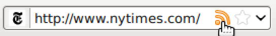
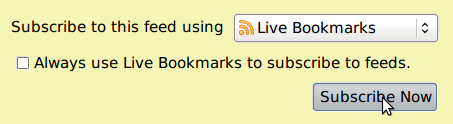
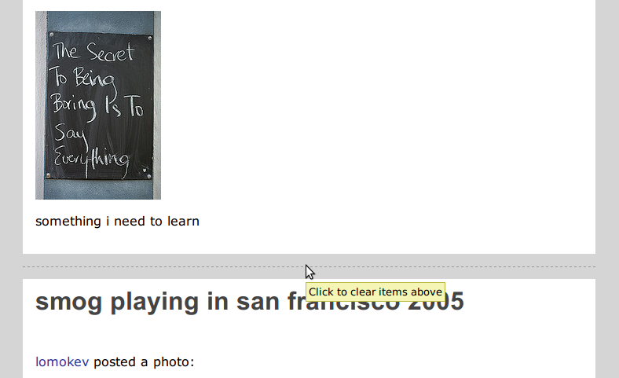

philip-rss
A super-simple RSS reader for Firefox
I just wanted an insanely simple RSS reader that was integrated into Firefox. A single page with my feeds and Firefox does the rest. All-offline (e.g. all data is stored on your computer). I wanted it to look pretty. That's pretty much it.
philip-rss uses Firefox's built-in RSS functionality so you don't have to manage another program. It'll also use your cookies and other authentication information just like Firefox would.


Then when you want to see your feeds just click the little rss icon in the right-hand corner of your Firefox window. philip-rss looks kinda like this:
You can clear out read items by clicking the "I've read all these" button or by clicking right above the last item you read, like this:

After you've added a few different RSS feeds to your Firefox bookmarks just sit back and wait. philip-rss will grab updates every 10 minutes, or more frequently if you ask.
If you like philip-rss, have questions, or have patches please email me at philipn at, you know, gmail.com.
—Philip Neustrom